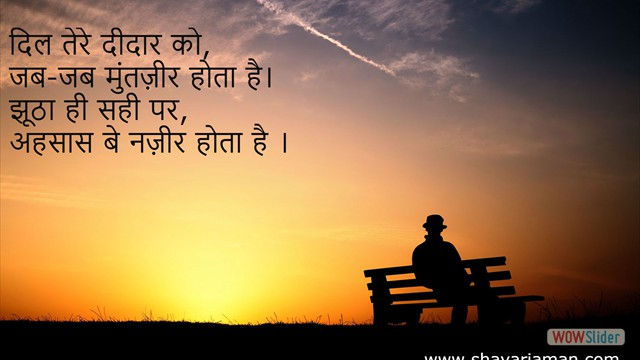
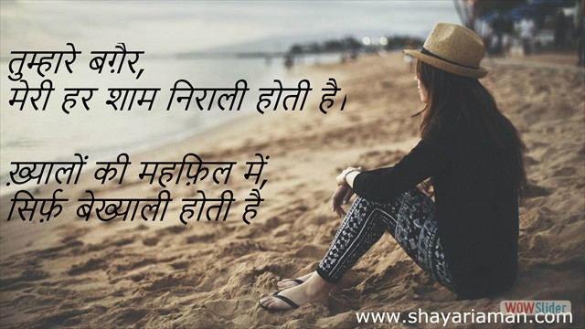

")
")
")
- 


- 


html slider by WOWSlider.com v8.8
मेरे गाँव का मौसम, बड़ा अजीब है।
जेठ है मेहरबाँ, और सावन ग़रीब है ।
Mere gavn ka mausam bada ajeeb hai.
jeth hai mahrban or sawan gareeb hai.
तक़दीर की लकीर में पाया था, मुहोब्बत का मँजर।
कमबख़्त ने लकीर ही बदल डाली, इस क़दर चलाया खँज़र।
Taqdeer ki lakeer main paya tha muhobbat ka manzar.
kambakhat ne kakeer hi badal daali, is qudar chalaya khanjar.
तेरे शहर को हुआ क्या, घिर गया हुँ ख़तरों से।
यहाँ तो दिल परखे जाते है, हुस्न की नज़रों से।
Tere sahar ko hua kya, ghir gaya hun khatron se.
yanha to dil parkhe jate hai, husan ki nazron se.
कुछ जनाज़े दिल से निकले, कुछ निकले घरों से,
घरों वाले दुनिया से बाहर, और दिल वाले ख़तरों से।
Kuch janaze dil se nikle, kuch nikle gharon se.
ghar wale duniya se bahar, dil wale kharon se.
ये शायरी ही निभायेगी मेरा साथ ज़िंदगी भर,
वक़्त के साथ ल़फ्ज, मतलब जो नहीं बदलते।
Ye shayari hi nibhayegi mera sath jindgi bhar,
waqt ke sath lafaj, matlab jo nahi badlte.
गीले- शिकवे सारे, अदम में रख देते।
राह ए मुहोब्बत का हिसाब, क़दम में रख देते।
मेरे ख़त का जवाब तो देते जनाब,
कलेजा निकाल कर, क़लम में रख देते।
Gile sikwe saare, adam main rakh dete.
rah e muhobbat ka hisab, kadam main rakh dete,
mere khat ka jawab to dete janab.
kaleja nikal ke kadam main rakh dete.
अँजाम ए मुहोब्बत, किस क़दर कहूँ,
अल्फ़ाज़ दर्द माँगते है, और क़लम लहू ।
Anjam e muhobbat kis kadar kahun.
alfaaj dard mangte hai, or kalam lahu.
हम तो रूसवा हो गए, दिल अपना तुड़वाकर।
और वो पा गए पाकिज़गी, बस एक निकाह पढ़वाकर।
Hum to ruswa ho gaye, dil apna tudwakar,
or wo paa gaye paakizgi, bus ek nikaah padhwaakar.
तारों को दर्द होता है धुन देकर,
और लोग कहते है, साजिन्दा साज बजाता है ।
खँजरों से मिटवाई थी, हाथों की लकीर को।
कैसे दोषी ठहराऊँ अब, मुंसिफ़ ए तक़दीर को।
Khanjron se mitwai thi, haton ki laqeer ko.
kaise dosi thahraaoon ab, munsif e taqdeer ko.
तुम्हें तुम्हारे पिया, हमें दास्ताँ ए ग़म मुबारक।
कात़िल हमारी दुनिया के, तुम्हे दूसरा जन्म मुबारक ।
Tumhe tumhare piya, hume dastan e gum mubaarak.
katil humari duniya ke, tumhe dusra janam mubarak.
कौन किसी पर रहम खाता है जनाब।
लोग तो बुझते चिराग़ों की भी क़सम खा लेते है।
Kon kisi par raham khata hai janab.
log to bujhte chiragon ki bhi kasam kha lete hai.
शायरी का मतलब किसी को समझ आये न आये,
पर मतलब की शायरी सबको समझ आती है ।
Shayari ka matlab kisi ko samajh aaye na aaye.
par matlab ki shayari sabko samajh aati hai.
अल्फाज़ों के पेट को, जवानियाँ खिलानी पड़ती है।
क़लम रूपी तलवार से, जिन्दगानियाँ मिटानी पड़ती है ।
Alfajon ke pet ko jawaniyan khilani padti hai.
kalam roopi talvar se jindganiyan mitani padti hai.
सिर्फ़ क़लम रखने से कुछ नहीं होता जनाब,
चलन भी बिगाड़ना पड़ता है, लफ़्जों की ज़ुस्तजु में !
Sirf kalam rakhne se kuch nahi hota janab.
chalan bhi bigadna padta hai.
आलम ए बेचारगी में, निगाह ए कर्म चाहिए।
जो लिखे फ़ख़्त ख़ुशी हमारी, ऐसी क़लम चाहिए।
Aalam e betajgi main, nigah e karam chahiye.
jo likhe faqt khusi humari, aisi kalam chahiye
हर शाख़ ए गुल पर, फुलों का आशियाँ नहीं होता।
होगी बेरुख़ी मौसम की, बेज़ार बाग़वाँ नहीं होता है।
Har saakh e gul par, fuloon ka aasiyan nahi hota.
hogi berukhi mausam ki, bezar bagwaan nahi hota.
शीशे की ज़िद थी, दर्पण बनना ।
फिर क्यों बुरा लगे, एक तरफ़ से बदलना।
Shishe ki zid thi darpan ban na.
fir kyon bura lage ek taraf se badlna.
कातिल नहीं ज़माने में, मेरे यार की तरह।
खामोशियाँ भी काम में लि, तलवार की तरह ।
Katil nahi jamane main mere yaar ki tarah.
khamosiyan bhi kaam main li talvar ki tarah.
इस पाक़िजा से नाते को, मुहब्बत का नाम ना दे,
लोग सब़ब ढुंढ़ते है, बदनाम करने का ।
Is pakiza se naate ko muhobbat ka naam na de.
log sabab dhundhte hai badnaam karne ka.
यूँ ही बदनाम हुआ श़ाकी, बैठकर महख़ाने में,
क़ुसूरवार तो मीना थी,लबों तक पहुँचाने में।
Yun hi badnaam hua saki, baith kar mahkhaane main.
kusurwaar to wo mina thi, labon tak pahunchane main.
छोड़कर आँधी की चपेट में, छोटे से आशियान को।
सुकून कैसे मिल जाता है, इस दिल के बाग़वान को।
Chodkar aandhi ki chapet main chote se aasiyan ko.
sukoon kaise mil jata hai is dil ke bagwaan ko.
ख़्वाहिशों के सागर में, ख़ुशियों की बारिश हो गयी।
पर साहिल की बस्तियों में, रोशनी धो गयी ।
Khawahison ke sagar main, khusiyon ki baris ho gai.
par sahil ki bastiyon main, roshni dho gai.